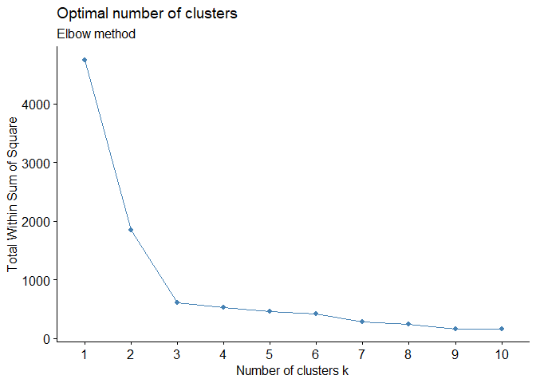
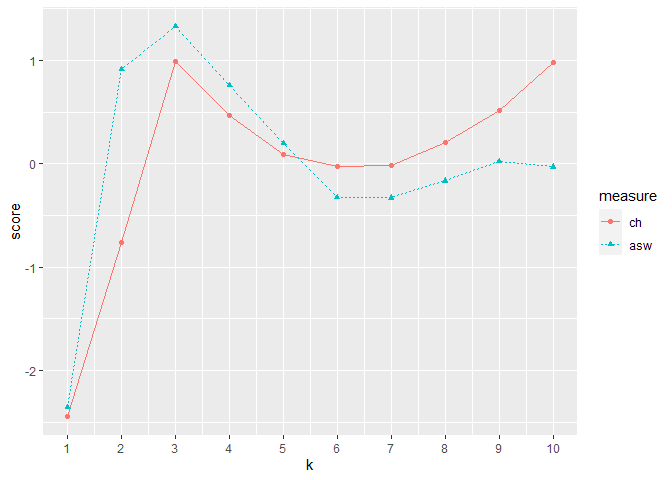

Overview
Author: Yong-Han Hank Cheng
This package provides functions for: 1. Preprocessing data. 2. Clustering with K-means or hierarchical clustering. 3. Classification with random forest.
Source code: https://github.com/yhhc2/machinelearnr
Installation
# Install the package from GitHub
devtools::install_github("yhhc2/machinelearnr")
# Load package
library("machinelearnr")Usage
Visit the package’s website for function reference: https://yhhc2.github.io/machinelearnr/
Examples
All functions with example code is run in this section. The functions are listed below in alphabetical order with example code to illustrate how each function should be used. The example code should be very similar to the example code in the function reference.
To see detailed descriptions for each function, please visit the package’s website.
Examples for clustering
CalcOptimalNumClustersForKMeans()
example.data <- data.frame(x = c(18, 21, 22, 24, 26, 26, 27, 30, 31,
35, 39, 40, 41, 42, 44, 46, 47, 48, 49, 54, 35, 30),
y = c(10, 11, 22, 15, 12, 13, 14, 33, 39, 37, 44,
27, 29, 20, 28, 21, 30, 31, 23, 24, 40, 45))
#dev.new()
plot(example.data$x, example.data$y)
#Results should say that 3 clusters is optimal
output <- CalcOptimalNumClustersForKMeans(example.data, c("x", "y"))
elbow.plot <- output[[1]]
ch.and.asw.plot <- output[[2]]
#dev.new()
elbow.plot
#dev.new()
ch.and.asw.plot
generate.2D.clustering.with.labeled.subgroup()
example.data <- data.frame(x = c(18, 21, 22, 24, 26, 26, 27, 30, 31, 35,
39, 40, 41, 42, 44, 46, 47, 48, 49, 54, 35, 30),
y = c(10, 11, 22, 15, 12, 13, 14, 33, 39, 37, 44, 27,
29, 20, 28, 21, 30, 31, 23, 24, 40, 45),
z = c(1, 1, 1, 1, 1, 1, 1, 1, 1, 1, 1, 1, 1,
1, 1, 1, 1, 1, 1, 1, 1, 1))
dev.new()
plot(example.data$x, example.data$y)
km.res <- stats::kmeans(example.data[,c("x", "y", "z")], 3, nstart = 25, iter.max=10)
grouped <- km.res$cluster
pca.results <- prcomp(example.data[,c("x", "y", "z")], scale=FALSE)
actual.group.label <- c("A", "A", "A", "A", "A", "A", "A", "B", "B", "B", "B",
"B", "B", "B", "B", "B", "B", "B", "B", "B", "B", "B")
results <- generate.2D.clustering.with.labeled.subgroup(pca.results, grouped, actual.group.label)
#PC1 vs PC2
print(results[[1]])
#PC1 vs PC3
results[[2]]
#Chi-square results
results[[3]]
#Table
results[[4]]generate.3D.clustering.with.labeled.subgroup
knitr::knit_hooks$set(webgl = hook_webgl)